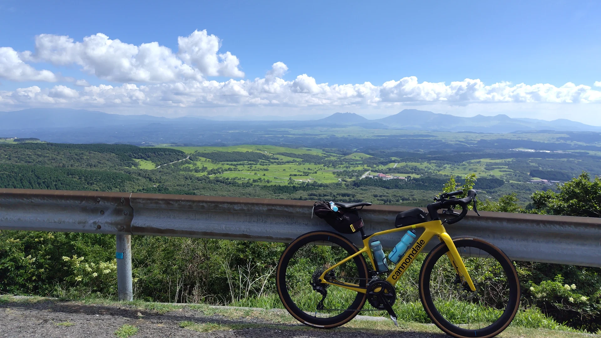
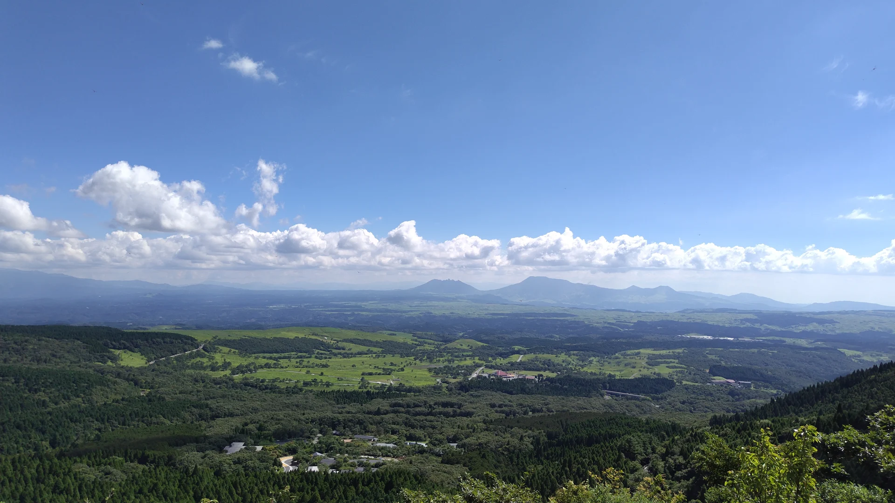
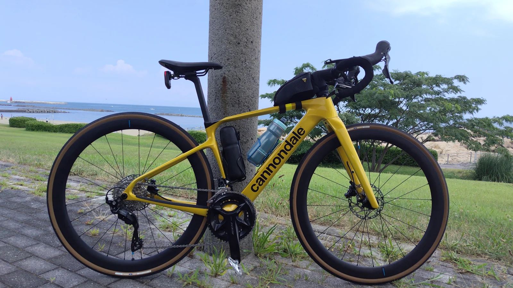

CYCLING JOURNALS & SMALL CREATIONS次の景色へ。
次の景色へ。
自分らしい
道具とともに。
関西から、ロードバイクで旅へ。
走った道、グルメ、絶景
そして、自分に合うものをつくる楽しみ。
実際に体験したことを、少しずつ記録します。

OITA, JAPAN — やまなみハイウェイ
関西発のロードバイク旅景色も、食事も、道中の工夫も。RIDE. TRY. MAKE.
RIDE JOURNAL
走った先に、残ったもの。
ルートだけでなく、よかった場所や反省まで。次の旅を考える人に届けたい、実体験の記録です。

大分 / フェリー × ロードバイク別府から、
別府から、
やまなみへ。
大阪から海を渡り、狭霧台、長者原、牧ノ戸峠へ。帰りは大分から神戸へ向かう、船中2泊・現地1日の旅。
写真と動画で旅を読む ↗TOOLS & MAKINGぴったりがなければ、
ぴったりがなければ、
つくってみる。
ロードバイクに乗るのが、一番楽しい。
その楽しみの中で生まれた小さな不便を、
3Dプリンターや手持ちの工具で解決していきます。
買って試した道具のことも、試行錯誤してつくったパーツのことも。使う人の視点で残していきたいと思っています。
次に紹介したいものサドルバッグに取り付ける、
サドルバッグに取り付ける、
リアビューレーダーマウント。
純正の取り付け治具がサドルバッグと干渉する。そこで、バッグ自体に取り付けられるパーツを自作しました。
ものづくりの背景を読む ＋
市販品ではぴったりのものが見つからないとき、必要な形を考えて、試作して、使ってみる。その過程も楽しみの一つです。取り付け写真や設計データをもとに、製作の記録をまとめていきます。

BIKE & GEAR旅を一緒に走る、
旅を一緒に走る、
自転車と装備。
走り方や荷物に合わせて、使いやすい組み合わせを探す。愛車や装備の紹介も、実際の旅でどう使ったかを大切にしていきます。
バイクCannondale Synapse Carbon 5
ホイールShimano WH-RS710-C46-TL、DT Swiss R470 DB
タイヤPanaracer グラベルキング30C、グラベルキングSK40C
ABOUT THIS JOURNAL好きなことを、
好きなことを、
自分のペースで。
11年ロードバイク
2年3Dプリンター
15年木工
大阪近郊を拠点に、ロードバイクで各地を走っています。ルートを考え、ランチのお店を探し、旅の動画を編集するのも楽しみ。紹介した場所を喜んでもらえると、うれしくなります。
3Dプリンターでは、市販されていない小さなパーツや、手持ちの容器にぴったり収まる収納を製作。木工では棚やベンチ、ウッドデッキなどもつくってきました。
「走って、つくって。」は、その体験を残す場所です。素晴らしかった景色も、うまくいかなかった経験も。次に走る人、何かをつくる人のヒントになればうれしいです。